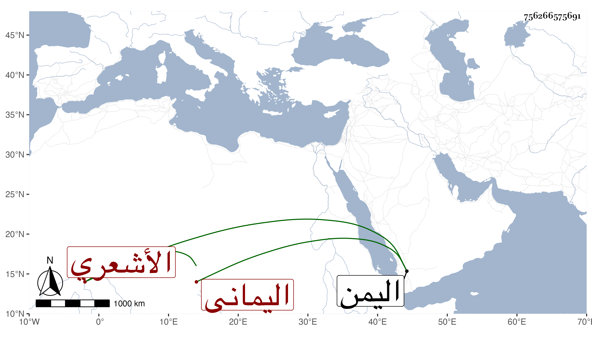

0902Sakhawi.DawLamic.ITO20230111-ara1.EIS1600.756266575691
Biography ID: 756266575691
269
أحمد بن محمد بن أحمد بن محمد أبو العباس اليماني الأشعري شيخ القراءات في عصره باليمن مطلقا . ولد سنة تسع وخمسين وسبعمائة ثم مال إلى أنه سبع بتقديم السين ، ممن انتفع به العفيف الناشري في القراءات وأرخ وفاته في ليلة الجمعة ثاني عشر شعبان سنة إحدى وأربعين وصلى عليه بمسجد الأشاعر بعد صبح يوم الجمعة ودفن عند شيخه المقرئ أبي بكر بن علي بن نافع .
